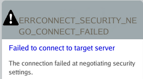
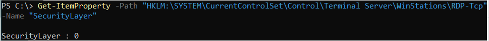
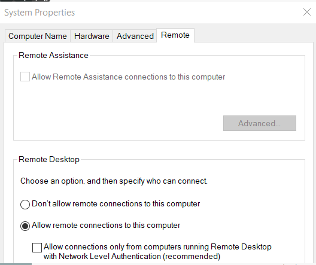
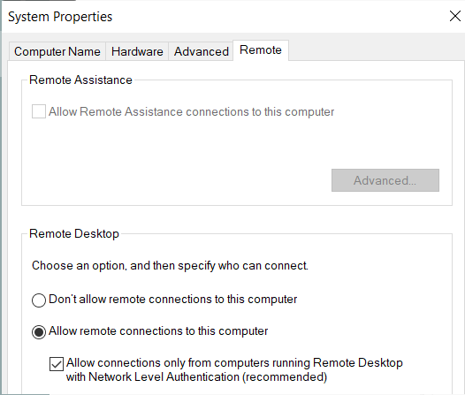

Summary
When connecting via RDP to a Windows resource, the following error may occur depending on the RDP security settings configured on the target resource:
ERRCONNECT_SECURITY_NEGO_CONNECT_FAILED Failed to connect to target server The connection failed at negotiating security settings

Instructions
This error is caused by the following combination of RDP settings on the target Windows resource:
1. The RDP SecurityLayer setting is set to 0 (RDP is used by server and client for authentication). This can be verified by running the following in PowerShell and checking the resulting SecurityLayer on the target Windows resource:Get-ItemProperty -Path "HKLM:\SYSTEM\CurrentControlSet\Control\Terminal Server\WinStations\RDP-Tcp" -Name "SecurityLayer"
If the output for SecurityLayer is 0, then this condition has been met.

2. Network Level Authentication (NLA) has been disabled for RDP.
To check this setting on the target Windows resource, press Windows+R to open a Run menu or open Command Prompt. In either Run or Command Prompt, execute the following:
sysdm.cpl
In the menu that opens, navigate to the Remote tab. Allow connections only from computers running Remote Desktop with Network Level Authentication is the correct control.
If this control is disabled, then this condition has been met.

There are two ways to resolve the error, depending on the desired security settings for your environment:
1. Change the RDP SecurityLayer value to 1 (server and the client negotiate the method for authentication) or 2 (Transport Layer Security (TLS) protocol is used by the server and the client for authentication), while leaving Network Level Authentication (NLA) disabled:Set-ItemProperty -Path "HKLM:\SYSTEM\CurrentControlSet\Control\Terminal Server\WinStations\RDP-Tcp" -Name "SecurityLayer" -Value 2
2. Enable Network Level Authentication (NLA) while leaving RDP's SecurityLayer value at 0:

IMPORTANT: For optimal security, it's recommended to have RDP's SecurityLayer value set to 2 while enabling Network Level Authentication (NLA).
The following links provide additional information about SecurityLayer and Network Level Authentication (NLA) from Microsoft:
Additional Troubleshooting
If the above configuration on the remote computer does not resolve the issue, apply the following configuration change to SbPAM.1. Open the sbpam_rdp.json proxy configuration file in a text editor: C:\ProgramData\Stealthbits\PAM\ProxyService\sbpam_rdp.json
2. Edit the file to ensure that the following setting is configured. Note: if the file already exists, ensure that all lines in the file are properly comma-separated after editing the file.
{
"ClientSettings": [{"key":"RdpSecurity", "Value":true}]
}
3. If the sbpam_rdp.json file does not exist, you can create the default file by executing this command from the Proxy Service installation directory (by default C:\Program Files\Stealthbits\PAM\ProxyService):
sbpam-proxy.exe cfg -c sbpam_rdp